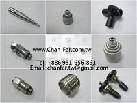
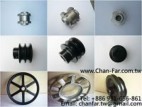
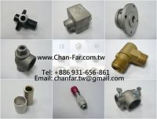

|
強發金屬有限公司( Chan-Far
Metal Co., Ltd. )
簡 介:成立於1979年(前名"強發工業社")為擴大服務領域更多元化經營, 於民國94年更改為"強發金屬有限公司", 多年來以各類型 (農用機械, 水泵, 空壓機, 食品機械 或 紡織 ...等 ) 機件加工製造 OEM 為主, 亦為專業鑄造廠, 依客戶需求委託設計ODM模具開發, 累積豐富生產經驗.深獲國內外機械業客戶及五金界的熱烈迴響, 亦獲得各界的一致好評. 更讓我們衷心的希望產品做到完善, 滿足客戶的需求並秉持 服 務 專業 技術 品質 做為永續經營的理念. 本公司產品型錄如有需要, 歡迎聯絡. 主 要產品:
 本廠為各式機械零件加工製造, 從鑄造 (鍛造) → 加工 → 成品, 無論鑄鐵, 碳鋼,
塑鋼,鋁 或 銅之原料, 一般五金用, 農用機械, 水泵, 空壓機之機體皮帶輪, 馬達皮帶輪, 各式各樣特殊皮帶輪, 本廠應有盡有,
皆可滿足客戶之需求, 代料代工都可配合,
貴公司如有合作必要請來電. 合作共創乃成功途徑 技 術支援詢問:技術支援的服務時間是星期一至星期六早上 8 點到晚上6點 (CST)。 |
||||||||||
| ●首頁 ●產
品
●相關資訊 ●Email 地址: 彰化縣福興鄉三和村南興街93-36號 客戶服務專線:(04)-7701699 傳真: (04)-7701411 強發金屬有限公司 版權所有Copyright (c) 2014 請用Chrome 瀏覽器 解析度為1024*768較好效果 |